Chapter 1: Data Centre Foundations¶
Before you study power, cooling or AI clusters, you need the big picture: what a data centre is, the different kinds, the rooms inside, and how power, cooling and data flow through the building. This chapter starts from zero and builds the vocabulary every newcomer needs, from tiers and the 'nines' of availability to PUE, kilowatts and site selection. It ends by following a single app request through a data centre and explaining why AI is reshaping the whole industry.
1.1 What Is a Data Centre and Why Does It Exist?¶
A data centre is a building, or a dedicated part of a building, built to hold large numbers of computers called servers, plus the storage and network equipment that goes with them. It keeps all that equipment powered, cool, connected to the internet and physically secure, every minute of every day. Almost everything you do online, from sending a message to asking an AI chatbot a question, is processed inside one.
Think of it like…
A data centre is to a home computer what a restaurant kitchen is to your kitchen at home: industrial power, serious ventilation, strict safety rules and staff on every shift so it can serve thousands of people without stopping.
Real-world example
Riverside Credit Union, a fictional small bank, kept its 12 servers in a cupboard behind reception. In one year a heatwave overheated the room and a three-hour power cut took online banking offline twice. The bank moved the servers into two rented racks in a professional data centre 20 km away, with backup generators, proper cooling and guards on duty 24/7. Over the next three years it had no outages caused by power or cooling.
How it works¶
- Electricity arrives from the public grid and is backed up by batteries and diesel generators.
- Servers, storage and network switches are mounted in standard metal racks inside a secure room.
- Cooling systems remove the heat that every watt of electricity eventually turns into.
- Fibre-optic cables link the building to internet carriers, cloud providers and other data centres.
- Staff, sensors and software watch everything around the clock and fix problems before users notice.
Who uses it
Every bank, hospital, retailer, government, streaming service and AI company depends on data centres, whether it owns them or rents space and computing from someone else.
Key takeaway
Memorise the four basic things every data centre sells or provides: space, power, cooling and connectivity, all wrapped in security and 24/7 operations.
Going deeper
- Size is quoted in megawatts of critical IT load, not floor area: an enterprise room may be under 1 MW, colocation buildings 5-50 MW, and hyperscale or AI campuses hundreds of MW.
- Nearly all electricity entering IT equipment leaves as heat, so power and cooling capacity are always designed as a matched pair; the extra energy for cooling and electrical losses shows up in PUE.
- Standards define the term formally: ANSI/TIA-942 and EN 50600 / ISO/IEC 22237 describe a building housing centralised IT plus its supporting power, environmental control, cabling and security infrastructure.
- The IEA estimated data centres used about 415 TWh in 2024, around 1.5% of world electricity, with the United States, China and Europe accounting for most of it.
- Ownership and operation are often split: a developer owns the building, a colocation provider operates it and dozens of tenants own the servers, each with separate contracts and responsibilities.
- Downtime is expensive: Uptime Institute surveys repeatedly find many significant outages cost well over US$100,000, which is why owners pay for redundancy, monitoring and trained 24/7 staff.
Common mistakes & misconceptions
- Thinking 'the cloud' is abstract: every cloud service runs on physical servers in real buildings with real power, cooling and staff.
- Measuring a data centre by floor area: megawatts of IT load are the true size and usually the limiting resource.
- Calling an office server cupboard a data centre: without backup power, proper cooling and 24/7 monitoring it is a single point of failure.
Try it: Estimate how much electricity a small group of servers uses in a year (Python)¶
watts_per_server = 400 # example average draw of one busy 1U server
servers = 20
hours_per_year = 24 * 365
kwh = watts_per_server * servers * hours_per_year / 1000
print(f"{kwh:,.0f} kWh per year") # 70,080 kWh
print(f"About {kwh/2700:.0f} typical homes' worth") # assuming ~2,700 kWh per home per year
Key equipment, standards, metrics, vendors & tools¶
| Name | What it does | Example |
|---|---|---|
| Data centre General industry term (TIA-942, EN 50600 define it formally) · Concept · Current · General |
A facility built to house and run IT equipment with dependable power, cooling, connectivity, security and staff. | A 20 MW building on an industrial estate holding 2,000 racks of servers for cloud customers is a data centre. |
| Server Dell, HPE, Lenovo, Supermicro and others · Equipment · Current · IT |
A computer built to run applications for many users at once, usually mounted in a rack with no screen or keyboard. | When you log into a shopping website, a web server builds the page and a database server looks up your order history. |
| Rack (cabinet) EIA-310 / IEC 60297 19-inch rack standard · Equipment · Current · Facilities |
A standard metal frame, 19 inches wide between its mounting rails, that holds servers and network gear stacked vertically. | A typical 42U rack is about 2 metres tall and can hold up to 42 thin 1U servers. |
| Storage system NetApp, Dell, Everpure (formerly Pure Storage), HPE and others · Equipment · Current · IT |
Equipment full of hard drives or flash drives that keeps data safely, often shared by many servers. | A hospital's patient records live on a storage array, copied to a second data centre every few minutes. |
| Network switch and router Cisco, Arista, Juniper (HPE), NVIDIA and others · Equipment · Current · IT |
Switches connect devices inside the data centre; routers connect the data centre to the outside world and other networks. | Each rack has a top-of-rack switch; a pair of border routers connects the whole site to internet carriers. |
| Computer room (mainframe era) IBM and other mainframe vendors, 1950s-1980s · Facility · Legacy · General |
Early air-conditioned rooms with raised floors built around one or a few huge mainframe computers, the ancestors of today's data halls. | A 1970s insurance firm ran all its policy records on one mainframe in a chilled, glass-walled computer room. |
| Server room / comms closet Common in offices and small firms · Facility · Legacy · Facilities |
A small room or cupboard in an ordinary building holding a few servers, often without proper backup power or cooling. | A dental practice's server sits beside the photocopier on a domestic plug socket with no generator. |
| Internet data centre (dot-com era) Late-1990s hosting and colocation providers · Facility · Legacy · Business |
Large shared facilities built around 1997-2001 to host the first wave of websites; many were later absorbed into today's colocation firms. | A 1999 startup rented a cage in a hosting provider's building instead of building its own server room. |
| Cloud computing NIST SP 800-145 definition; AWS, Microsoft Azure, Google Cloud and others · Service · Current · IT |
Renting computing, storage and software over the internet on demand, paid by use, all running in providers' data centres. | A start-up launches 50 virtual servers in minutes for a product launch, then switches them off afterwards. |
| Space, power, cooling, connectivity Industry shorthand for what a facility provides · Concept · Current · Business |
The four core resources a data centre supplies to the IT equipment it hosts; running out of any one limits growth. | A hall still has empty floor space but no spare power, so no more racks can be added: it is 'power-constrained'. |
| Mission-critical facility Industry term · Concept · Current · Operations |
A building whose failure would seriously harm a business or public service, so it is designed and run for very high reliability. | An emergency-services dispatch system runs from a mission-critical data centre with duplicated power and cooling. |
| Workload General IT term · Concept · Current · IT |
Any job the IT equipment does: websites, databases, email, video streaming, scientific simulation or AI training and inference. | An online retailer's busiest workload is its checkout system, which spikes tenfold on Black Friday. |
| Global data-centre electricity use International Energy Agency (IEA), Energy and AI report, 2025 · Metric · Current · Sustainability |
The IEA estimated data centres used about 415 TWh in 2024, roughly 1.5% of world electricity, possibly doubling by 2030. | The IEA's base case projects around 945 TWh by 2030, driven largely by AI. |
1.2 Types of Data Centre¶
Not all data centres are alike. Some are owned by one company for its own use, some rent space to many customers, and some are giant campuses run by cloud and internet companies. Others are tiny sites close to users, factory-built boxes, or new 'AI factories' packed with graphics processors.
Who owns what?
| Enterprise | Colocation | Cloud / hyperscale | |
|---|---|---|---|
| Building owner | The organisation | Provider | Provider |
| IT owner | The organisation | Customer | Provider |
| Customer buys | Everything | Space, power, cooling | Compute as a service |
| Typical contract | Capital project | Monthly or multi-year lease | Pay per use |
| Typical size | Often under 10 MW | One rack to 50 MW+ | 100 MW+ campuses |
The key question is who owns the building and who owns the servers inside it.
Think of it like…
Data centres are like places to live: you can own a house (enterprise), rent a flat in a block (retail colocation), lease a whole building (wholesale), stay in a hotel where everything is provided (cloud), or park a camper van near where you need to be (edge).
Real-world example
Northgate Retail, a fictional chain, keeps its old payroll system in its own on-premises server hall, rents two cages in a colocation site for its online shop, and runs analytics in a public cloud region. For in-store video analytics it places a small edge cabinet in its regional warehouse to cut delay to under 5 milliseconds. To train a product-recommendation model it rents GPU time from a specialist AI cloud for six weeks.
How it works¶
- Decide who owns the building and who owns the IT equipment inside it.
- Enterprise sites: one organisation owns and uses everything.
- Colocation: a provider owns the building, power and cooling; customers bring their own IT.
- Cloud and hyperscale: the provider owns everything and rents out computing as a service.
- Edge, modular and AI sites are chosen for location, speed of deployment or extreme density.
Who uses it
Business leaders, IT managers and procurement teams choose between these models; data centre staff work across all of them.
Key takeaway
In interviews, be able to explain the difference between retail and wholesale colocation, and between a cloud region and an availability zone.
Going deeper
- Retail colocation is sold by the rack, cage or kW with monthly fees and cross-connect charges; wholesale is sold by the megawatt or whole hall, often on 10-15 year leases to hyperscale tenants.
- A cloud region holds several availability zones; AWS, for example, describes its zones as physically separated by a meaningful distance yet within about 100 km (60 miles) of each other.
- Edge sites trade scale for proximity: placing compute within a few tens of kilometres of users cuts round-trip delay to a few milliseconds, useful for gaming, video analytics and 5G services.
- Hyperscalers both build their own campuses and lease large wholesale capacity, so one hall can be 'colocation' to the developer and 'cloud' to the end customer.
- AI-focused facilities differ mainly in density: liquid-cooled GPU racks of 100 kW or more, heavier floors, larger power blocks and very fast cluster networks.
- Modular and prefabricated designs cut build time by factory-testing power skids, cooling modules or whole IT pods, then assembling them on site in parallel with civil works.
Common mistakes & misconceptions
- Confusing colocation with cloud: in colocation you own and manage the servers; in cloud you rent computing and never touch the hardware.
- Assuming every hyperscale hall is owned by the cloud company: many are leased from wholesale developers under build-to-suit deals.
- Treating availability zones as disaster recovery in distant cities: zones in one region are relatively close; true DR needs a second region.
Try it: Compare a colocation bill with a cloud bill for the same servers (Python, made-up prices)¶
racks, kw_per_rack = 4, 8
colo_per_kw_month = 180 # example all-in price per kW of power per month
cross_connects = 3 * 300 # example monthly fee per cross-connect
colo = racks * kw_per_rack * colo_per_kw_month + cross_connects
print(f"Colocation: {colo:,} per month (you also buy and run the servers)")
vms, price_per_vm_hour = 120, 0.40 # example cloud prices
cloud = vms * price_per_vm_hour * 730
print(f"Cloud: {cloud:,.0f} per month (provider owns the hardware)")
Key equipment, standards, metrics, vendors & tools¶
| Name | What it does | Example |
|---|---|---|
| Enterprise (on-premises) data centre Owned by banks, governments, universities, retailers · Facility · Current · Business |
A facility owned and operated by one organisation purely for its own IT systems. | A national bank runs two company-owned data centres 30 km apart for its core banking platform. |
| Retail colocation Equinix, Digital Realty and many regional providers · Service · Current · Business |
Renting individual racks, cages or suites in a shared facility, usually with rich interconnection to carriers and clouds. | A fintech rents four racks in a city-centre colocation site and buys cross-connects to three carriers. |
| Wholesale colocation Digital Realty, Vantage, STACK, CyrusOne and others · Service · Current · Business |
Leasing a whole data hall or building, typically several megawatts, on a long contract to one large customer. | A cloud provider signs a 15-year lease for a 32 MW building and fills it with its own servers. |
| Hyperscale data centre Amazon (AWS), Microsoft, Google, Meta, Oracle and others · Facility · Current · Business |
Very large facilities or campuses, often 100 MW or more, built and run by cloud and internet giants using standardised designs. | A hyperscale campus of six identical buildings serves cloud customers across a whole country. |
| Cloud region Public cloud providers (AWS, Azure, Google Cloud, Oracle) · Concept · Current · IT |
A geographic area where a cloud provider runs a cluster of data centres that customers can choose for their workloads. | A German hospital stores data in a Frankfurt cloud region to keep patient records inside the EU. |
| Availability zone (AZ) AWS, Microsoft Azure, Google Cloud (zones) · Concept · Current · IT |
One or more separate data centres inside a cloud region, with independent power, cooling and networking, close enough for fast links. | An app runs copies in three zones; when one zone loses power, the other two keep serving users. |
| Edge data centre Telecom operators, EdgeConneX, tower companies and others · Facility · Current · IT |
A small facility placed close to users or devices to cut delay (latency) and local network traffic. | A 500 kW edge site beside a stadium processes 5G video replays in a few milliseconds. |
| Modular / prefabricated data centre Schneider Electric, Vertiv, Eaton and others · Product · Current · Facilities |
Power, cooling or IT modules built and tested in a factory, then shipped to site and connected, saving months of construction. | A mining company installs two containerised 300 kW IT modules at a remote site in eight weeks. |
| AI factory / GPU cloud (neocloud) CoreWeave, Nebius, Lambda, Crusoe and others · Facility · Emerging · Business |
Facilities or cloud providers specialised in renting dense GPU clusters for AI training and inference, often liquid-cooled. | A fictional AI lab rents 2,000 GPUs for three months to train a language model. |
| Interconnection hub / carrier hotel Examples: 60 Hudson Street (New York), One Wilshire (Los Angeles) · Facility · Current · IT |
A building where hundreds of networks meet and connect, often older city-centre property full of fibre. | A content company places a router in a carrier hotel to connect directly to 40 internet providers. |
| Telecom central office / exchange Telecom operators · Facility · Current · IT |
A phone company building, originally for telephone switches, increasingly reused to host servers and edge computing. | An operator converts half of an old telephone exchange into a small edge data hall. |
| HPC / supercomputing centre National labs and universities; ranked by the TOP500 list · Facility · Current · IT |
A facility built around a supercomputer for science, weather and defence, often with heavy liquid cooling. | El Capitan at Lawrence Livermore National Laboratory topped the TOP500 list from November 2024. |
| Government / sovereign data centre National governments and defence agencies · Facility · Current · Security |
A facility built or certified to keep government or national data under national control and to strict security rules. | A ministry's classified systems run in a government-owned site staffed only by security-cleared personnel. |
| Hybrid and multi-cloud General IT strategy · Concept · Current · Business |
Using a mix of on-premises, colocation and one or more public clouds, connected together. | A retailer keeps its payment systems in colocation but bursts its website into two public clouds during sales. |
1.3 Anatomy of a Data Centre: The Rooms and Spaces¶
A data centre is not one big room of computers. The 'white space' holds the IT racks, while the 'grey space' holds the electrical and cooling machinery that keeps them alive. Around these sit rooms for network connections, security, deliveries, monitoring staff, spares and backup generators.
Think of it like…
Think of a theatre: the stage is the white space where the show happens, while backstage (grey space) holds the lighting rigs, power and crew that make the show possible.
Real-world example
On her first day at a fictional 12 MW site, technician Amara is badged through the guardhouse and a two-door security airlock. She is shown four data halls of 3 MW each, a UPS and battery room behind each hall, the generator yard with eight diesel generators, and two meet-me rooms where carriers connect. Deliveries arrive at the loading dock, and new servers are unboxed in the build room so cardboard never enters the data hall.
How it works¶
- Pass the perimeter fence and guardhouse, then a mantrap or airlock into the building.
- Deliveries go via the loading dock to a staging or build room, never straight into the halls.
- Data halls (white space) hold rows of racks in hot and cold aisles.
- Electrical rooms, UPS/battery rooms and mechanical plant (grey space) sit beside or below the halls.
- Meet-me rooms connect carriers; the NOC watches everything; generators and chillers sit outside or on the roof.
Who uses it
Facilities technicians, security officers, network engineers and site managers move through all these spaces daily; designers lay them out.
Key takeaway
Learn the TIA-942 cabling spaces in order from outside in: Entrance Room, Main Distribution Area, Horizontal Distribution Area, Equipment Distribution Area.
Going deeper
- Sites are planned as security layers: perimeter fence and vehicle barriers, guarded gate, building entrance with mantrap, then hall and cage access, each needing separate authorisation.
- A-side and B-side electrical rooms are often separated by fire-rated walls so one fire cannot take out both power paths, the idea behind Tier IV compartmentalisation.
- TIA-942 names the telecom spaces from outside in: entrance room, main distribution area, horizontal distribution areas, optional zone distribution areas and equipment distribution areas at the racks.
- Many modern AI halls sit on a concrete slab with overhead busway, cable trays and liquid-cooling pipework, because heavy racks and large pipes suit a solid floor better than raised tiles.
- Support spaces such as spares stores, workshops, customer work areas and shipping rooms keep cardboard, dust and tools out of the halls, protecting air quality and limiting fire load.
- Floor loading is specified early: dense AI racks and lithium battery cabinets weigh far more than older equipment and may need reinforced slabs or load-spreading plates.
Common mistakes & misconceptions
- Bringing cardboard into a data hall: it sheds fibres and dust that clog filters and adds fire load; unbox in the build room.
- Assuming white space is the whole building: grey space, plant yards and support rooms often equal or exceed the IT floor area.
- Treating the meet-me room as open to all staff: it is a high-security space entered only with approved access.
Try it: A simple space programme for a small site (CSV you can open in a spreadsheet)¶
space,type,area_m2,notes
Data Hall 1,white space,1200,~360 racks hot/cold aisle
Data Hall 2,white space,1200,future phase
UPS & Battery Rooms,grey space,450,A and B side separated
LV Switch Rooms,grey space,300,per hall
Mechanical Plant,grey space,500,pumps; chillers on roof
Meet-Me Rooms (x2),telecom,80,diverse fibre entries
NOC/SOC,support,90,24/7 staffed
Loading Dock & Build Room,support,250,no cardboard in halls
Security Entrance,security,60,mantrap + guard
Generator Yard,external,1500,8 x 2.5 MW + fuel
Key equipment, standards, metrics, vendors & tools¶
| Name | What it does | Example |
|---|---|---|
| White space (data hall) Industry term; 'computer room' in TIA-942 · Facility · Current · Facilities |
The room where IT racks live, kept clean, cool and secure; floor area is often quoted in square metres or feet. | A 2,000 m² data hall holds about 600 racks arranged in hot and cold aisles. |
| Grey space Industry term · Facility · Current · Facilities |
Back-of-house areas housing electrical and mechanical plant such as switchgear, UPS and cooling units. | Visitors rarely see the grey space, but it often takes as much floor area as the data halls. |
| Electrical room (switch room) Industry term · Facility · Current · Electrical |
A room holding switchgear, transformers and distribution boards that route power to the halls; only authorised staff may enter. | Each data hall has its own low-voltage switch room with A-side and B-side boards. |
| UPS and battery room Industry term; battery safety per local fire codes · Facility · Current · Electrical |
Rooms holding uninterruptible power supplies and their batteries, which bridge the gap until generators start. | Lithium-ion batteries in the UPS room hold the 2 MW hall for about five minutes. |
| Mechanical plant / chiller plant Industry term · Facility · Current · Mechanical |
Areas holding chillers, pumps, cooling towers or dry coolers that reject heat from the building to the outside air. | Six air-cooled chillers sit on the roof, with pumps and pipework in a plant room below. |
| Meet-me room (MMR) Industry term; colocation sites · Facility · Current · IT |
A secure room where carriers and customers connect their networks to each other using cross-connect cables. | A customer orders a fibre cross-connect from its cage to a carrier's rack in the MMR, done within a day. |
| Entrance room (ER) ANSI/TIA-942 telecommunications space · Facility · Current · IT |
The room where outside fibre and telecom cables enter the building and hand over from carriers to the site. | Two diverse fibre ducts enter the building on opposite sides, each to its own entrance room. |
| MDA, HDA, ZDA and EDA ANSI/TIA-942 cabling areas · Concept · Current · IT |
TIA-942 areas: Main Distribution Area (core), Horizontal Distribution Area (row level), Zone Distribution Area (optional) and Equipment Distribution Area (racks). | Core routers sit in the MDA, row switches in HDAs, and servers in EDA racks. |
| NOC / SOC Industry term · Facility · Current · Operations |
Network/Operations Centre and Security Operations Centre: control rooms where staff monitor systems, alarms and cameras 24/7. | A NOC operator sees a chiller alarm at 03:10 and dispatches the on-shift engineer. |
| Loading dock Industry term · Facility · Current · Facilities |
A secure delivery bay, ideally level with lorry beds, used to receive heavy racks and equipment. | A pre-filled 1,400 kg AI rack rolls straight off the lorry onto the dock leveller. |
| Staging / build room Industry term · Facility · Current · IT |
A room for unpacking, assembling and testing equipment, keeping cardboard and dust out of the data halls. | Technicians unbox 40 servers, burn-in test them for 24 hours, then roll them into the hall. |
| Security entrance and mantrap Physical security practice · Facility · Current · Security |
A controlled entry, often a two-door airlock (mantrap), letting only one authorised person through at a time. | The second door opens only after the first closes and the visitor's badge and fingerprint both match. |
| Generator yard and fuel storage Industry term · Facility · Current · Electrical |
An outdoor area holding standby diesel or gas generators and their fuel tanks, sized to run the site for many hours. | Ten 3 MW generators with belly tanks hold enough fuel for 48 hours at full load. |
| Raised floor vs slab floor Design choice · Concept · Current · Facilities |
Older halls use raised tiles to carry cold air and cables; many modern halls use a concrete slab with overhead cabling. | A 2005 hall has a 600 mm raised floor; the new AI hall puts racks straight on the slab. |
1.4 How a Data Centre Works: Power, Cooling and Network Paths¶
Every data centre runs three paths at the same time. The power path brings electricity from the grid down to each server, with batteries and generators as backup. The cooling path carries the heat away, and the network path carries data in and out over fibre-optic cables.

Think of it like…
It is like the human body: the power path is the blood supply, the cooling path is sweating and breathing out heat, and the network path is the nervous system carrying messages.
Real-world example
At a fictional 6 MW site, grid power arrives at 33,000 volts, is stepped down to 400 volts, and passes through UPS units to the racks. Each server takes power through two separate supplies, A and B. Cold air at 24 °C enters the server fronts, leaves the back at about 36 °C, and cooling units carry that heat via water to roof-top coolers. Meanwhile data arrives through two fibre routes into the meet-me room and flows over switches to the servers.
How it works¶
- Power: grid → substation/transformer → switchgear → UPS → PDU → rack PDU → server power supplies.
- Backup: if the grid fails, batteries carry the load for minutes while generators start in seconds.
- Cooling: cool air or liquid takes heat from IT → cooling units → water loops → chillers or dry coolers → outside air.
- Network: carrier fibre → entrance room/MMR → border routers → spine and leaf switches → servers.
- Monitoring: BMS, EPMS and DCIM software watch every path and raise alarms.
Who uses it
Critical facilities engineers own power and cooling; network engineers own the network path; NOC operators watch all three.
Key takeaway
Almost all electricity used by IT ends up as heat, so cooling capacity must match power capacity: a 1 MW IT load needs roughly 1 MW of heat removal.
Going deeper
- Losses add up along the chain: transformers, UPS conversion, cables and server power supplies each lose a few percent, which is why efficient UPS modes and higher distribution voltages matter at scale.
- Standby generators typically start and accept load within about 10-15 seconds; UPS batteries or flywheels only bridge that gap, plus margin for a failed start and retry.
- Air-cooled servers usually raise air temperature by around 10-15 °C; liquid-cooled racks move heat into water loops warm enough for dry coolers or heat reuse.
- The network path is built like the power path, with at least two carriers on diverse routes, two meet-me rooms, and redundant border routers and spine switches.
- BMS, EPMS and DCIM data feed the NOC; good sites correlate alarms across systems so a cooling fault and a rising rack temperature appear as one incident, not two.
Common mistakes & misconceptions
- Thinking UPS batteries run the site for hours: they usually bridge only minutes until generators carry the load.
- Planning power and cooling separately: adding IT power without matching cooling capacity creates hot spots and failures.
- Assuming two power cords mean redundancy: they must connect to genuinely separate A and B paths, loaded so either can carry everything.
Try it: Simple model: heat out equals power in (Python)¶
it_load_kw = 1000 # 1 MW of IT equipment
heat_kw = it_load_kw * 1.0 # nearly all becomes heat
btu_per_hr = heat_kw * 3412
tons = btu_per_hr / 12000
print(f"Heat to remove: {heat_kw:.0f} kW = {btu_per_hr:,.0f} BTU/h = {tons:.0f} tons of cooling")
Key equipment, standards, metrics, vendors & tools¶
| Name | What it does | Example |
|---|---|---|
| Utility feed and substation Grid operator / utility · System · Current · Electrical |
The incoming connection from the public grid, often at medium or high voltage, sometimes with an on-site substation. | A 60 MW campus gets two 132 kV feeds into its own substation. |
| Transformer Hitachi Energy, Siemens Energy, Schneider Electric, Eaton and others · Equipment · Current · Electrical |
Changes electricity from one voltage to another, for example 11 kV down to 400 V for the building. | Each hall has two 3 MVA transformers, one on the A side and one on the B side. |
| Switchgear ABB, Schneider Electric, Siemens, Eaton and others · Equipment · Current · Electrical |
Cabinets of large circuit breakers and switches that route, protect and isolate electrical circuits. | Engineers open a breaker in the switchgear to isolate one UPS for maintenance. |
| Standby generator and ATS Caterpillar, Cummins, Rolls-Royce (mtu), Kohler and others · System · Current · Electrical |
Engine-driven generators that start when the grid fails; an automatic transfer switch moves the load onto them. | Mains fail; generators reach full speed in about 10 seconds and the ATS transfers the load. |
| UPS (Uninterruptible Power Supply) Vertiv, Schneider Electric, Eaton, ABB and others · Equipment · Current · Electrical |
Batteries and power electronics that keep IT running without a flicker when mains power fails, until generators take over. | The UPS carries the hall for 40 seconds while generators start and stabilise. |
| PDU, RPP and rack PDU Vertiv, Schneider Electric, Eaton, Raritan (Legrand) and others · Equipment · Current · Electrical |
Power distribution units and remote power panels split power into circuits; a rack PDU is the smart power strip inside each rack. | Each rack has two rack PDUs, fed from A and B panels, measuring power per outlet. |
| Dual power supplies (A/B feeds) Server design practice · Concept · Current · Electrical |
Most servers have two power supplies connected to separate A and B power paths, so either path alone can keep them running. | Engineers switch off the B path for maintenance; servers keep running on the A path. |
| CRAC / CRAH units Vertiv, Schneider Electric (Uniflair), STULZ and others · Equipment · Current · Mechanical |
Computer Room Air Conditioners have their own compressors; Computer Room Air Handlers use chilled water. Both push cool air to racks. | Eight CRAH units around a hall's edge blow cool air under the raised floor. |
| Chiller, cooling tower and dry cooler Trane, Carrier, Johnson Controls (YORK), Daikin and others · Equipment · Current · Mechanical |
Plant that removes heat from water loops and rejects it outdoors, by refrigeration, evaporation or plain air. | On cool nights the chillers switch off and dry coolers reject heat using outside air alone. |
| Hot aisle / cold aisle Industry best practice (ASHRAE TC 9.9 guidance) · Practice · Current · Mechanical |
Racks face front-to-front and back-to-back so cool intake air and hot exhaust air do not mix. | Doors and a roof on the hot aisle (containment) let the cooling units run more efficiently. |
| Direct liquid cooling CoolIT, Vertiv, Schneider Electric (Motivair), nVent and others · Technology · Emerging · Mechanical |
Pumping liquid to cold plates on chips, or immersing servers, to remove far more heat than air can. | A 130 kW AI rack removes most of its heat through cold plates fed by a coolant distribution unit. |
| Fibre entry and carriers Telecom carriers and dark-fibre providers · System · Current · IT |
Fibre-optic cables from several carriers enter by separate routes so one cut cable does not isolate the site. | A digger cuts the north fibre route; traffic shifts to the south route within a second. |
| Spine-leaf network Common data-centre network design · Technology · Current · IT |
A two-layer design where every rack (leaf) switch connects to every core (spine) switch, giving short, predictable paths. | Any server reaches any other in three switch hops: leaf, spine, leaf. |
| BMS, EPMS and DCIM Schneider Electric, Siemens, Honeywell, Vertiv, Sunbird and others · Software · Current · Operations |
Software that monitors mechanical plant (BMS), electrical systems (EPMS) and assets and capacity (DCIM). | DCIM shows a rack drawing 90% of its circuit limit, so new servers are placed elsewhere. |
1.5 Availability Maths and Redundancy: Nines, MTBF and N+1¶
Availability is the share of time a system is working, written as a percentage such as 99.99% ('four nines'). Data centres raise availability by adding spare equipment (redundancy) and by removing any single part whose failure would stop everything. A little maths tells you how much downtime each design allows and how much the spares really help.
Think of it like…
Redundancy is like carrying a spare tyre: one puncture no longer ends your journey, and carrying two spares (or a second car) protects you against even more bad luck, at a higher cost.
Real-world example
Leila, a junior engineer at the fictional Harbourview Data Centre, compares two cooling designs. Each chiller is available 99% of the time. With exactly the three chillers needed (N=3) in series logic, all three must work: 0.99³ ≈ 97.0%. Adding one spare (N+1, four chillers where any three suffice) raises cooling availability to about 99.94%, so the extra chiller is easy to justify.
How it works¶
- Availability = uptime ÷ total time; turn it into minutes of downtime per year (525,600 minutes in a year).
- For a repairable part: Availability = MTBF ÷ (MTBF + MTTR).
- Parts in series (all needed): multiply their availabilities, so the chain is weaker than any one part.
- Parts in parallel (any one will do): 1 − (1 − A₁)(1 − A₂); redundancy multiplies the reliability.
- Find and remove single points of failure, then choose N, N+1, 2N or 2N+1 to match the business need and budget.
Who uses it
Design engineers, reliability engineers and site managers use these numbers to justify spending; cloud architects use the same maths for servers and zones.
Key takeaway
Memorise: 99.9% ≈ 8.8 hours a year, 99.99% ≈ 53 minutes, 99.999% ≈ 5.3 minutes of downtime.
Going deeper
- Availability = MTBF ÷ (MTBF + MTTR), so cutting repair time helps as much as buying more reliable parts; on-site spares and trained staff shrink MTTR dramatically.
- Reliability block diagrams model the path: series elements multiply availabilities, parallel redundant groups combine as one minus the product of unavailabilities, and the weakest series element dominates.
- Redundancy only helps when failures are independent; common causes such as shared controls, contaminated fuel, firmware bugs or one person's error can disable 'redundant' units together.
- Uptime Institute outage analyses consistently find human error and procedural failures involved in a large share of significant outages, so procedures and training matter as much as hardware.
- Percentages hide frequency: one 53-minute outage and fifty one-minute blips both equal 99.99%, but the blips may crash far more servers and applications.
- Cloud architects apply the same maths above the facility, spreading applications across zones so the application's availability exceeds that of any single building.
Common mistakes & misconceptions
- Adding availabilities instead of multiplying: two 99.9% parts in series give about 99.8%, not 99.9% or more.
- Assuming N+1 everywhere removes all single points of failure: a shared breaker, busbar or control system can still drop everything.
- Reading MTBF as life expectancy: 200,000 hours is an average failure rate across a population, not a promise one unit lasts 23 years.
Try it: Nines-to-downtime and parallel redundancy calculator (Python)¶
MIN_PER_YEAR = 365 * 24 * 60 # 525,600
for a in (0.99, 0.999, 0.9999, 0.99999):
print(f"{a*100:.3f}% -> {(1-a)*MIN_PER_YEAR:8.1f} min/year down")
# Availability from MTBF and MTTR (hours)
mtbf, mttr = 50_000, 8
print("Single UPS:", round(mtbf / (mtbf + mttr), 6))
# Two identical units in parallel, either one is enough
a = 0.999
print("Two in parallel:", 1 - (1 - a) ** 2) # 0.999999
# Two units in series, both needed
print("Two in series:", a * a) # 0.998001
Key equipment, standards, metrics, vendors & tools¶
| Name | What it does | Example |
|---|---|---|
| Availability Reliability engineering; defined in SLAs · Metric · Current · Operations |
The percentage of time a system or service is working as intended over a period, usually a year or month. | A service down for 4 hours in a year was available (8,760 − 4) ÷ 8,760 ≈ 99.95%. |
| The nines Industry shorthand · Concept · Current · Operations |
Availability quoted by its count of nines: three nines 99.9%, four nines 99.99%, five nines 99.999%. | Five nines allows only about 5 minutes and 15 seconds of downtime per year. |
| MTBF (Mean Time Between Failures) Reliability engineering (e.g. IEC 60050-192 vocabulary) · Metric · Current · Operations |
The average running time between failures of a repairable item; higher is better. | A UPS module with an MTBF of 200,000 hours fails on average once every 23 years of running. |
| MTTR (Mean Time To Repair) Reliability engineering · Metric · Current · Operations |
The average time to restore a failed item, including finding the fault, getting parts and testing. | Keeping spare fans on site cut MTTR for cooling units from 48 hours to 2 hours. |
| Single point of failure (SPOF) Reliability engineering · Concept · Current · General |
Any one component whose failure alone stops the whole service. | Two UPS units both fed through one shared breaker still have that breaker as a single point of failure. |
| Series availability Reliability block diagrams · Concept · Current · General |
When every part in a chain must work, total availability is the product of each part's availability. | Transformer 99.99% × UPS 99.95% × PDU 99.99% ≈ 99.93% for the whole chain. |
| Parallel availability Reliability block diagrams · Concept · Current · General |
When any one of several parts can do the job, the system fails only if all fail together. | Two 99% paths in parallel: 1 − 0.01 × 0.01 = 99.99%. |
| N (need) Redundancy notation · Concept · Current · Electrical |
Exactly enough capacity to carry the full load, with no spare; any failure or maintenance reduces capacity. | A 1 MW hall with two 500 kW UPS units is N: losing one UPS drops the load. |
| N+1 Redundancy notation · Concept · Current · Electrical |
Enough units to carry the load plus one spare, so any single unit can fail or be serviced. | Five chillers where four carry the load is N+1. |
| 2N Redundancy notation · Concept · Current · Electrical |
Two completely independent systems, each able to carry the full load alone (A side and B side). | Two separate UPS systems, each 2 MW, feed a 2 MW hall through A and B paths. |
| 2N+1 and distributed redundancy Redundancy notation and design practice · Concept · Current · Electrical |
2N+1 adds a further spare to a 2N design; distributed and block-redundant designs share spares more cheaply (detailed in the power chapter). | Four UPS blocks each loaded to 75% let any one fail while the other three absorb its load. |
| Planned vs unplanned downtime Operations practice · Concept · Current · Operations |
Planned downtime is scheduled for maintenance; unplanned downtime is caused by failures, errors or disasters. | A Tier II site must shut IT down for some planned work; a Tier III site should not. |
| SLA (Service Level Agreement) Contracts between provider and customer · Document · Current · Business |
A contract promising availability, power or response times, with service credits if the provider falls short. | A colocation SLA promises 100% power availability on A+B feeds, with credits for any outage. |
| OVHcloud Strasbourg fire (2021) OVHcloud, Strasbourg, France, March 2021 · Incident · Current · Operations |
A fire destroyed one building on OVHcloud's Strasbourg campus and damaged another, taking many customer sites offline. | Customers with backups only in the same campus lost data, showing why copies belong in a different location. |
1.6 Tiers, Ratings and Availability Classes¶
Because 'reliable' means different things to different people, the industry uses a few classification systems that describe how resilient a data centre's power and cooling are. The best known is the Uptime Institute's Tier I to Tier IV. TIA-942 uses Rated-1 to Rated-4, and the European EN 50600 and international ISO/IEC 22237 standards use Availability Classes 1 to 4.

Think of it like…
Tiers are like hotel star ratings for resilience: a one-star place gives you a bed, while a top-rated one has backup everything and can lose a generator mid-dinner without the lights flickering.
Real-world example
Coastline Insurance, a fictional firm, shortlists two colocation sites. Site A claims to be 'Tier III design' but holds no certificate; Site B holds Uptime Tier III Certification of Constructed Facility. Coastline's consultant explains that Tier III means any component can be maintained without switching off IT, but a single unplanned failure may still cause an outage. Coastline picks Site B and keeps a disaster-recovery copy in a second site 80 km away.
How it works¶
- Tier I: basic capacity, a single path with no redundant components; maintenance means shutdown.
- Tier II: adds redundant capacity components (spare UPS modules, chillers) on a single distribution path.
- Tier III: concurrently maintainable; every component and path can be taken out for planned work without stopping IT.
- Tier IV: fault tolerant; the site survives any single unplanned failure, with compartmentalised, independent paths.
- Check whether a claim is self-declared or independently certified, and for which stage: design, constructed facility or operations.
Who uses it
Design engineers, consultants, colocation sales teams, auditors and customers' procurement teams use these classifications in every data centre deal.
Key takeaway
Concurrently maintainable (Tier III) protects against planned work; fault tolerant (Tier IV) also protects against an unplanned failure, yet neither promises zero downtime because people and procedures still matter.
Going deeper
- Uptime certifies in stages: Tier Certification of Design Documents (TCDD), then Constructed Facility (TCCF) after on-site demonstrations, and separately Operational Sustainability (TCOS) for management and staffing.
- Uptime's Tier Standard treats on-site engine generators as the primary power source and the utility as an economic alternative, so generators must be rated to run without runtime limits.
- TIA-942 Rated-1 to Rated-4 and EN 50600 / ISO/IEC 22237 Availability Classes 1-4 follow similar logic, but each has its own rules, auditors and certificates, so the labels are not interchangeable.
- The overall rating is set by the weakest subsystem: a 2N electrical design paired with single-path N+1 cooling cannot be Tier IV.
- Tier IV adds compartmentalisation and continuous cooling: independent systems must be physically separated, and cooling must keep running through a power failure so dense racks do not overheat.
- Most commercial colocation targets Tier III; Tier IV appears at some financial and government sites, while hyperscalers often achieve resilience in software across many sites instead.
Common mistakes & misconceptions
- Equating a Tier with an uptime percentage: the Tier Standard defines topology and behaviour, not guaranteed availability.
- Accepting 'Tier III design' as proof: check whether the constructed facility and its operations are certified, and when.
- Believing Tier IV means no outages: human error, poor maintenance or multiple failures can still cause downtime.
Try it: Quick redundancy check against Tier-style concepts (Python, simplified teaching model)¶
site = {"ups_units": 4, "ups_needed": 3, "power_paths": 2,
"maintain_any_path_without_shutdown": True, "survives_any_single_fault": False}
spare = site["ups_units"] - site["ups_needed"]
print("UPS redundancy:", "N+%d" % spare if spare else "N (no spare)")
if site["survives_any_single_fault"]:
print("Behaves like: fault tolerant (Tier IV / Class 4 concept)")
elif site["maintain_any_path_without_shutdown"] and site["power_paths"] >= 2:
print("Behaves like: concurrently maintainable (Tier III / Class 3 concept)")
elif spare:
print("Behaves like: redundant components (Tier II / Class 2 concept)")
else:
print("Behaves like: basic capacity (Tier I / Class 1 concept)")
# Real Tier status needs Uptime Institute certification, not a script!
Key equipment, standards, metrics, vendors & tools¶
| Name | What it does | Example |
|---|---|---|
| Uptime Institute Uptime Institute, founded 1993 · Organisation · Current · Business |
Advisory organisation that created the Tier Classification System and certifies data centre designs, builds and operations worldwide. | Uptime reports over 4,300 Tier Certifications issued in more than 120 countries. |
| Tier I: Basic Capacity Uptime Institute Tier Standard: Topology · Standard · Current · Facilities |
Dedicated space with UPS, cooling and a generator, but no redundant components; planned work requires shutting down IT. | A small regional office's computer room shuts down one weekend a year for UPS servicing. |
| Tier II: Redundant Capacity Components Uptime Institute Tier Standard: Topology · Standard · Current · Facilities |
Adds spare capacity components such as an extra UPS module or chiller, but power and cooling still travel one path. | A spare chiller covers a chiller fault, but replacing a main pipe valve still means downtime. |
| Tier III: Concurrently Maintainable Uptime Institute Tier Standard: Topology · Standard · Current · Facilities |
Every component and distribution path can be removed for planned maintenance without affecting IT; the most common target for commercial sites. | Engineers isolate the whole A-side switchboard for servicing while servers run on the B side. |
| Tier IV: Fault Tolerant Uptime Institute Tier Standard: Topology · Standard · Current · Facilities |
Survives any single unplanned failure or event without IT impact, using independent, physically separated (compartmentalised) systems. | A fire in the A-side UPS room is contained and the B side carries the whole load. |
| Tier Certification (Design and Constructed Facility) Uptime Institute (TCDD, TCCF) · Certification · Current · Business |
Independent certification that the design documents, and then the finished building after on-site testing, meet a Tier level. | A provider holds Tier III design certification but cannot claim a certified building until the facility test passes. |
| Tier Certification of Operational Sustainability Uptime Institute (TCOS) · Certification · Current · Operations |
Assesses staffing, training, maintenance and procedures, because most outages involve human or process failures, not just equipment. | A Tier III site earns Gold Operational Sustainability after improving its maintenance programme and staff training. |
| ANSI/TIA-942-C Rated-1 to Rated-4 Telecommunications Industry Association, TIA-942-C (May 2024) · Standard · Current · Facilities |
US standard for data centre infrastructure covering cabling, electrical, mechanical, architecture and security, with four resilience 'Rated' levels. | A design certified Rated-3 under TIA-942 is broadly comparable in intent to concurrent maintainability. |
| EN 50600 series CENELEC (European Committee for Electrotechnical Standardization) · Standard · Current · Facilities |
European multi-part standard for data centre facilities: construction, power, environmental control, cabling, security, operations and KPIs. | A Dutch colocation site is certified to EN 50600 Availability Class 3 by an accredited auditor. |
| ISO/IEC 22237 series ISO/IEC JTC 1 · Standard · Current · Facilities |
International data centre facility standards based largely on EN 50600, letting the same approach be used worldwide. | A Singapore operator references ISO/IEC 22237 in its tender documents. |
| Availability Classes 1-4 EN 50600-1 / ISO/IEC 22237-1 · Concept · Current · Facilities |
Class 1 single path; Class 2 single path with redundant components; Class 3 multiple paths, concurrently maintainable; Class 4 fault tolerant. | The power system is Class 3 while the telecom cabling is designed to Class 4. |
| ANSI/BICSI 002 Classes F0-F4 BICSI, Data Center Design and Implementation Best Practices · Standard · Current · Facilities |
A widely used design best-practice standard that grades facility resilience from Class F0 (none) to F4 (fault tolerant). | A design team uses BICSI 002 checklists while drafting a Class F3 hall. |
| Tier percentage myth Uptime Institute guidance · Concept · Current · General |
Figures like '99.982% for Tier III' come from old papers; Uptime's Tier Standard defines topology requirements, not availability percentages. | An interviewer asks Tier III's uptime percentage; the strong answer explains Tiers are not defined by percentages. |
| 'Tier compliant' or 'Tier ready' claims Marketing practice; Uptime certification only via its own audits · Practice · Current · Business |
Self-declared claims without an independent certificate; buyers should ask for the certificate and check its scope and date. | A brochure says 'Tier IV ready'; the buyer finds no certificate on Uptime's public list. |
1.7 Key Metrics: PUE, WUE, CUE and Capacity¶
Data centres are measured by how much energy and water they use, how much carbon they emit and how well they use the capacity they built. The most famous number is PUE, which compares the energy for the whole building with the energy that actually reaches the IT equipment. A PUE of 1.0 would mean zero overhead; real sites range from about 1.1 to 2 or more.
Think of it like…
PUE is like a delivery company asking how much fuel the lorry burns compared with the weight of parcels it delivers: everything above the parcels themselves is overhead.
Real-world example
Over one year the fictional Northfield site uses 52,000 MWh in total, of which 40,000 MWh reaches IT equipment, so PUE = 52,000 ÷ 40,000 = 1.30. It also uses 72 million litres of water, giving WUE = 72,000,000 ÷ 40,000,000 kWh = 1.8 L/kWh. After adding hot-aisle containment and raising supply air temperature, next year's PUE falls to 1.22, saving about 3,200 MWh.
How it works¶
- Meter total facility energy at the utility intake and IT energy at UPS outputs or rack PDUs.
- PUE = total facility energy ÷ IT equipment energy, measured over a full year to include all seasons.
- WUE = site water (litres) ÷ IT energy (kWh); CUE = CO₂ emissions (kg) ÷ IT energy (kWh).
- Track capacity: IT load in MW, kW per rack, utilisation and stranded capacity.
- Report and compare carefully; climate, design and measurement point all change the numbers.
Who uses it
Energy managers, sustainability teams, operations leaders and investors track these metrics; the EU now requires larger data centres to report them.
Key takeaway
PUE measures infrastructure overhead, not how useful the computing is: a site full of idle servers can still post a great PUE.
Going deeper
- ISO/IEC 30134-2 defines PUE categories by where IT energy is metered: UPS output, PDU output or IT equipment input; later points are more accurate and give a higher, more honest PUE.
- Design PUE is a calculated figure at planned load; operational PUE is measured over twelve months and is usually worse at low load, because fixed losses are spread over less IT energy.
- WUE and PUE can trade against each other: evaporative cooling saves energy but consumes water, while air-cooled chillers save water but use more electricity, so read the metrics together.
- CUE depends on grid carbon intensity; companies report location-based figures from local grids and market-based figures that credit purchased renewables, and the two can differ greatly.
- The EU Energy Efficiency Directive requires data centres with at least 500 kW of installed IT power to report energy, water, renewable share and heat-reuse KPIs annually to a European database.
- Capacity metrics drive revenue: sold versus built MW, utilisation and stranded capacity show how much more an operator can sell before new investment is needed.
Common mistakes & misconceptions
- Comparing PUEs without context: a cool-climate hyperscaler and a tropical enterprise site cannot be judged on one number.
- Quoting a single cool-night snapshot: standards require energy measured over a full year, including hot summers.
- Thinking low PUE means efficient computing: PUE ignores how much useful work the servers actually do.
Try it: PUE, DCiE and WUE calculator (Python)¶
total_facility_mwh = 52_000
it_mwh = 40_000
water_litres = 72_000_000
pue = total_facility_mwh / it_mwh
dcie = 100 / pue
wue = water_litres / (it_mwh * 1000) # L per kWh of IT energy
print(f"PUE = {pue:.2f}") # 1.30
print(f"DCiE = {dcie:.0f}%") # 77%
print(f"WUE = {wue:.2f} L/kWh") # 1.80
print(f"Overhead energy = {total_facility_mwh - it_mwh:,} MWh")
Key equipment, standards, metrics, vendors & tools¶
| Name | What it does | Example |
|---|---|---|
| PUE (Power Usage Effectiveness) The Green Grid (2007); ISO/IEC 30134-2:2016 · Metric · Current · Sustainability |
Total facility energy divided by IT equipment energy over a period; 1.0 is the theoretical ideal. | A site using 13 GWh in total for 10 GWh of IT energy has PUE 1.3. |
| DCiE (Data Centre infrastructure Efficiency) The Green Grid · Metric · Legacy · Sustainability |
The inverse of PUE shown as a percentage: IT energy ÷ total energy × 100. | PUE 1.25 equals DCiE 80%; most reports now quote PUE instead. |
| ISO/IEC 30134 series ISO/IEC JTC 1/SC 39 · Standard · Current · Sustainability |
International family of data centre key performance indicator standards, defining PUE, REF, ERF, CUE, WUE and others precisely. | An auditor checks that a reported PUE follows ISO/IEC 30134-2 measurement rules. |
| WUE (Water Usage Effectiveness) The Green Grid; ISO/IEC 30134-9 · Metric · Current · Sustainability |
Litres of site water used per kWh of IT energy, mainly from evaporative cooling. | An evaporatively cooled site in a dry climate reports WUE 1.9 L/kWh; an air-cooled site near zero. |
| CUE (Carbon Usage Effectiveness) The Green Grid; ISO/IEC 30134-8 · Metric · Current · Sustainability |
Kilograms of CO₂-equivalent emitted by the site's energy use per kWh of IT energy. | A site on a coal-heavy grid has CUE 0.7 kg/kWh; a similar site on hydro power is near 0.02. |
| REF (Renewable Energy Factor) ISO/IEC 30134-3 · Metric · Current · Sustainability |
The share of a data centre's energy that comes from renewable sources, from 0 to 1. | Buying 60% of its electricity through a wind PPA gives a site REF 0.6. |
| ERF (Energy Reuse Factor) ISO/IEC 30134-6 · Metric · Emerging · Sustainability |
The share of a data centre's energy reused outside it, for example as heat for homes. | Piping waste heat into a town's district heating network lifts a site's ERF to 0.15. |
| Industry average PUE Uptime Institute Global Data Center Survey · Metric · Current · Sustainability |
Uptime's annual survey average has crept down slowly for years, reaching 1.52 in 2026; weighting by facility size gives about 1.36. | A 1.52 PUE means 52 kWh of overhead for every 100 kWh delivered to IT. |
| Hyperscale PUE Operator sustainability reports (e.g. Google) · Metric · Current · Sustainability |
Large purpose-built cloud fleets reach much lower PUEs through scale, free cooling and custom designs. | Google reported a fleet-wide average annual PUE of 1.09 for 2025. |
| kW per rack (rack density) Industry measure · Metric · Current · Facilities |
Average or maximum power drawn by one rack; it drives power distribution and cooling design. | Typical enterprise racks draw under 10 kW; current AI GPU racks can exceed 100 kW. |
| IT capacity vs utility capacity (MW) Industry convention · Metric · Current · Business |
Sites are sold by critical IT load in MW; the grid connection must be larger to cover cooling and losses. | A '100 MW' campus with design PUE 1.3 needs roughly 130 MW from the grid at peak. |
| Utilisation Industry measure · Metric · Current · Operations |
How much of the built power, cooling or space capacity is actually being used. | A 10 MW hall drawing 6.5 MW is 65% utilised. |
| Stranded capacity Capacity management term · Concept · Current · Operations |
Capacity that exists but cannot be used because another resource (space, cooling, power or network ports) ran out first. | A hall has 2 MW spare power but no cooling left in one zone, stranding that power. |
| EU data centre reporting EU Energy Efficiency Directive (EU) 2023/1791; Delegated Regulation (EU) 2024/1364 · Regulation · Current · Sustainability |
EU data centres with IT power demand of at least 500 kW must report energy, water and efficiency KPIs annually to an EU database. | An Irish 2 MW colocation site submits its PUE, WUE and renewable share every year. |
1.8 The Language of Power and Heat: Units for Beginners¶
Data centre people talk constantly in units of electricity and heat: watts, kilowatts, megawatts, volts, amps and kilowatt-hours. Power (watts) is how fast energy is used right now, while energy (kilowatt-hours) is how much was used over time. Heat is measured in the same watts, or in older units like BTU per hour and tons of refrigeration.
Power versus energy
| Power (kW, MW) | Energy (kWh, MWh) | |
|---|---|---|
| Measures | How fast energy is used | Total energy used |
| Car analogy | Speed | Distance driven |
| 15 kW rack | 15 kW right now | 131,400 kWh per year |
| Used for | Sizing cables, UPS, cooling | Bills, PUE, carbon reports |
| Heat link | 1 kW ≈ 3,412 BTU/h | 1 kWh = 3.6 MJ |
Power is a rate; energy is power multiplied by time.
Think of it like…
Think of water from a tap: voltage is the pressure, current (amps) is the flow, power (watts) is how hard the water is working right now, and energy (kWh) is the total water that filled the bath.
Real-world example
Technician Dev checks a rack fed by a three-phase 400 V, 32 A circuit. Its capacity is √3 × 400 × 32 ≈ 22.2 kVA, or about 21 kW at a power factor of 0.95. The rack actually draws 15 kW, which over a year is 15 × 8,760 ≈ 131,400 kWh. That 15 kW also becomes about 51,000 BTU/h of heat, or roughly 4.3 tons of cooling.
How it works¶
- Power (W) = volts (V) × amps (A) for simple DC or single-phase loads with power factor 1.
- Three-phase power ≈ √3 × line voltage × current × power factor.
- Energy (kWh) = power (kW) × hours; bills and PUE use energy, not power.
- Apparent power (kVA) × power factor = real power (kW); equipment is often rated in both.
- Heat: 1 kW ≈ 3,412 BTU/h; 1 ton of refrigeration = 12,000 BTU/h ≈ 3.517 kW.
Who uses it
Every technician, engineer, salesperson and planner uses these units daily; the power and cooling chapters build on them.
Key takeaway
Never mix up kW (power, a rate) and kWh (energy, an amount): '5 MW' describes size, '40,000 MWh' describes a year's use.
Going deeper
- Conversions to memorise: 1 kW ≈ 3,412 BTU/h; 1 ton of refrigeration = 12,000 BTU/h ≈ 3.517 kW; 1 kWh = 3.6 megajoules; a year has 8,760 hours (8,784 in a leap year).
- Transformers, UPS units and generators are rated in kVA because their heating depends on current, while IT loads and cooling plant are planned in kW.
- Three-phase power is √3 (about 1.73) × line voltage × current × PF; at the same current, a 400 V three-phase feed carries about three times a 230 V single-phase feed.
- Colocation is often priced per kW of committed power per month plus metered energy in kWh, so customers must understand both the rate and the amount.
- Heat and airflow are linked: removing 1 kW with a 10 °C air temperature rise needs roughly 0.08 m³/s (about 175 CFM) of air.
- Nameplate ratings overstate typical draw for ordinary servers, so planners use measured peaks; AI servers running training jobs operate much closer to their rated power.
Common mistakes & misconceptions
- Mixing up kW and kWh: '10 MW' describes capacity; a year at full load is about 87,600 MWh.
- Treating kVA and kW as equal: they match only at power factor 1.0, so check which one a datasheet quotes.
- Forgetting √3 in three-phase sums, which underestimates circuit capacity by about 42%.
Try it: kVA vs kW, three-phase capacity and heat conversion (Python)¶
import math
V, A, pf = 400, 32, 0.95 # 3-phase line voltage, amps, power factor
kva = math.sqrt(3) * V * A / 1000
kw = kva * pf
print(f"Circuit: {kva:.1f} kVA = {kw:.1f} kW at PF {pf}")
# Safe continuous loading is often limited to 80% of breaker rating
print(f"Planning limit at 80%: {kw*0.8:.1f} kW")
rack_kw = 15
print(f"Heat: {rack_kw*3412:,.0f} BTU/h = {rack_kw*3412/12000:.1f} tons")
print(f"Energy per year: {rack_kw*8760:,} kWh")
Key equipment, standards, metrics, vendors & tools¶
| Name | What it does | Example |
|---|---|---|
| Watt (W) and kilowatt (kW) SI unit of power · Concept · Current · Electrical |
The rate of using or delivering energy; 1 kW = 1,000 W. | A server drawing 500 W and a kettle drawing 3 kW: the kettle uses power six times faster. |
| Megawatt (MW) and gigawatt (GW) SI units of power · Concept · Current · Electrical |
1 MW = 1,000 kW; 1 GW = 1,000 MW. Data centre size is usually quoted in MW of IT load. | A 100 MW campus draws about as much power as a mid-sized town; AI campuses now reach for 1 GW. |
| Kilowatt-hour (kWh) and MWh Unit of energy · Concept · Current · Electrical |
Energy used: power multiplied by time. 1 kW for 1 hour = 1 kWh; 1,000 kWh = 1 MWh. | A 10 kW rack running all year uses 87,600 kWh, or 87.6 MWh. |
| Volt (V) SI unit of electrical potential · Concept · Current · Electrical |
Electrical 'pressure' pushing current; data centres use high, medium and low voltages at different stages. | Power arrives at 11 kV, is stepped down to 400 V, then racks receive 230 V per phase. |
| Ampere (A) SI unit of electric current · Concept · Current · Electrical |
The flow rate of electric charge; cables and breakers are sized by the amps they can safely carry. | A rack's 32 A breaker trips when servers try to pull 40 A. |
| AC and DC Electrical engineering · Concept · Current · Electrical |
Alternating current reverses direction many times a second (grid power); direct current flows one way (batteries, chips). | Grid AC enters the server's power supply, which converts it to 12 V or 48 V DC for the board. |
| Single-phase vs three-phase Electrical engineering · Concept · Current · Electrical |
Three-phase power uses three offset AC waves, delivering much more power over similar cables; standard for racks above a few kW. | A 7 kW rack runs fine on single-phase; a 40 kW rack needs three-phase feeds. |
| kVA and power factor Electrical engineering · Concept · Current · Electrical |
kVA is apparent power; kW is real power doing work. Power factor (0-1) links them: kW = kVA × PF. | A 500 kVA UPS with a 0.9 PF rating supports up to 450 kW of IT load. |
| BTU per hour (BTU/h) Imperial heat unit, common in US HVAC · Concept · Current · Mechanical |
British Thermal Units per hour, a rate of heat flow; 1 kW of electricity becomes about 3,412 BTU/h of heat. | A 5 kW server rack gives off about 17,000 BTU/h. |
| Ton of refrigeration (TR) Cooling capacity unit, mainly US · Concept · Current · Mechanical |
Cooling capacity of 12,000 BTU/h, about 3.517 kW, from the ice-melting origins of air conditioning. | A 1,000-ton chiller removes about 3.5 MW of heat. |
| Temperature and delta-T (ΔT) Thermodynamics · Concept · Current · Mechanical |
Delta-T is the temperature rise across equipment; more heat per litre or cubic metre moved means bigger ΔT. | Air enters a server at 24 °C and leaves at 36 °C: a ΔT of 12 °C (12 K). |
| Nameplate vs measured power Capacity planning practice · Concept · Current · Operations |
Nameplate is the maximum a power supply is rated for; real draw is usually much lower, so planners measure actual use. | A server labelled 1,600 W typically draws 600 W, so budgeting by nameplate strands capacity. |
| Rack unit (U) EIA-310 / IEC 60297 · Concept · Current · Facilities |
The standard height slot in a rack: 1U = 1.75 inches (44.45 mm). | A 2U server takes two slots; a 42U rack holds 21 of them before counting switches. |
1.9 Site Selection: Where to Build a Data Centre¶
Choosing where to build a data centre is one of the biggest decisions in its life, because you cannot move a building later. The top questions are: can we get enough electricity soon enough, are there good fibre connections, and is the land safe from floods, earthquakes and storms? Cost, water, climate, skilled workers, laws and the local community's views all matter too.
Think of it like…
Picking a data centre site is like choosing where to open a big bakery: you need a strong power supply for the ovens, good roads for deliveries, no flood risk, staff who live nearby and neighbours who will not complain about the noise at 4 a.m.
Real-world example
Solace Cloud, a fictional provider, compares three plots for a 60 MW campus. Plot A is next to a city but the utility cannot supply power until 2032. Plot B has power by 2028 but sits partly in a 1-in-100-year floodplain. Plot C, 70 km from the city, has a substation upgrade due in 2027, two fibre routes and cool winters for free cooling; at 70 km the extra round-trip delay is only about 0.7 ms, so Plot C wins.
How it works¶
- Confirm power: grid capacity, connection date, cost and the option of on-site generation.
- Confirm connectivity: at least two diverse fibre routes and acceptable latency to users and other sites.
- Screen hazards: floodplains, earthquakes, hurricanes, wildfire, flight paths and nearby industrial risks.
- Check land, zoning, planning rules, water supply, tax incentives, climate and local workforce.
- Engage the community and regulators early about noise, water, diesel generators and jobs.
Who uses it
Site-selection consultants, real-estate and development teams, utility engineers and planning specialists do this work, often years before construction.
Key takeaway
Today the first question in most markets is 'how soon can we get power?': in many regions the grid connection, not land, decides where data centres go.
Going deeper
- Developers often secure land with option agreements and pay for utility studies before buying, because a plot without a firm power date has little value for a data centre.
- Latency rule of thumb: light in fibre covers about 200 km per millisecond, so each 100 km of route adds roughly 1 ms of round-trip delay before equipment delays.
- Hazard screening uses flood maps (1-in-100 and 1-in-500-year zones), seismic maps, storm and wildfire records, flight paths and nearby hazardous industry or pipelines.
- Disaster-recovery pairs and availability zones need separation: far enough apart to avoid shared disasters, close enough for synchronous replication, often tens of kilometres.
- Power price and grid carbon intensity shape decades of operating cost; Nordic countries attract builders with cheap renewable power and cold climates despite distance from big cities.
- Local opposition can stop projects: generator and fan noise, water use, diesel emissions, traffic and loss of farmland are common objections best addressed early.
Common mistakes & misconceptions
- Choosing land first and asking about power later: grid connection dates now decide feasibility in most major markets.
- Assuming sites must be in the city: most applications tolerate a few milliseconds, so locations 50-100 km away often work.
- Using straight-line distance for latency: real fibre routes can be much longer, so obtain route maps or measure.
Try it: Fibre latency calculator: how far is too far? (Python)¶
# Light in glass fibre travels at roughly 200,000 km/s
# so about 5 microseconds per km one way.
for km in (10, 70, 100, 500, 2000):
rtt_ms = km * 2 * 5 / 1000 # there and back, in milliseconds
print(f"{km:5} km of fibre -> ~{rtt_ms:.1f} ms round trip (before equipment delays)")
# Real routes are longer than the straight line, so add a margin.
Key equipment, standards, metrics, vendors & tools¶
| Name | What it does | Example |
|---|---|---|
| Power availability and grid connection Utilities and grid operators · Concept · Current · Electrical |
Whether the local grid can deliver the megawatts needed and how long the connection queue is; in many markets waits run to years. | A developer finds a perfect plot but the utility offers power only in six years, so it moves on. |
| Fibre diversity Telecom carriers · Concept · Current · IT |
Having two or more physically separate fibre routes into the site so one cut does not isolate it. | Fibre enters from the north road and the south railway corridor, never sharing a duct. |
| Latency Physics of light in fibre (~5 µs per km) · Metric · Current · IT |
The delay for data to travel; roughly 1 ms round trip per 100 km of fibre, plus equipment delays. | A trading firm keeps servers within a few kilometres of the exchange to save microseconds. |
| Water availability Local water utilities and regulators · Concept · Current · Sustainability |
Access to enough water for evaporative cooling, or a design that avoids it in water-stressed areas. | In a drought-prone region the design uses closed-loop air-cooled chillers instead of cooling towers. |
| Flood risk Flood maps (e.g. FEMA in the US, Environment Agency in England) · Concept · Current · Facilities |
Risk of river, coastal or surface-water flooding; designers avoid floodplains and raise critical plant above flood levels. | A site outside the 1-in-500-year flood zone still puts generators on raised plinths. |
| Seismic and severe-weather risk Building codes and hazard maps · Concept · Current · Facilities |
Earthquakes, hurricanes, tornadoes, wildfire and extreme heat, which drive structural design or rule a location out. | A Tokyo data centre sits on seismic isolators; a Gulf Coast site is rated for hurricane-force winds. |
| Land, zoning and planning permission Local planning authorities · Concept · Current · Business |
The plot must be large enough, correctly zoned and approved for a data centre, generators and substations. | Planning approval for a 40-hectare campus takes 14 months after public consultation. |
| Tax incentives National, state and local governments · Concept · Current · Business |
Tax breaks on equipment, property or electricity offered to attract data centre investment. | Several US states, including Virginia, exempt qualifying data centre equipment from sales and use tax. |
| Climate and free-cooling hours Weather data; ASHRAE climatic design data · Concept · Current · Mechanical |
Cooler, drier climates allow more hours of cooling with outside air, cutting energy use and PUE. | A Nordic site can cool with outside air for most of the year. |
| Skilled workforce Local labour market · Concept · Current · Business |
Availability of electricians, mechanical technicians, engineers and security staff to build and run the site. | A remote site offers relocation packages because few local workers have critical-facilities experience. |
| Data sovereignty and regulation Laws such as the EU GDPR and national data-localisation rules · Regulation · Current · Business |
Rules that require or encourage certain data to be stored and processed inside a country or region. | A government health service requires patient data to stay within national borders. |
| Moratoria and grid restrictions Governments and grid operators · Regulation · Current · Business |
Pauses or limits on new data centres where grids are strained, such as Singapore's 2019-2022 moratorium and limits around Dublin. | A developer shelves a Dublin project and builds in another region instead. |
| Community acceptance Local residents, councils and campaign groups · Practice · Current · Business |
Winning local support by addressing noise, water use, diesel emissions, traffic, visual impact and local benefits. | A developer adds acoustic screens, heat-reuse plans and a local jobs programme after public meetings. |
| Northern Virginia ('Data Center Alley') Loudoun and Prince William counties, Virginia, USA · Market · Current · Business |
Widely described as the world's largest data centre market, built on dense fibre, early internet history and tax incentives. | Ashburn hosts a huge cluster of cloud and colocation campuses, now limited mainly by grid capacity. |
1.10 The Data Centre Lifecycle: Plan, Design, Build, Operate, Retire¶
A data centre goes through a long life: someone plans why it is needed, engineers design it, contractors build it, testers prove it works, operators run it for decades, and eventually it is upgraded or shut down. Each stage has its own documents, teams and risks. The building usually lasts 20 years or more, while the servers inside are replaced every few years.

Think of it like…
It is like the life of a passenger aircraft: designed and certified, built, test-flown, flown daily with strict maintenance for decades, refitted with new seats and screens, and finally retired and recycled.
Real-world example
Meridian Health, a fictional hospital group, decides in 2025 it needs 4 MW for imaging and records. The business case and site search take 9 months, design 8 months and construction 16 months, using a design-build contractor. Commissioning runs through Levels 1 to 5, ending with a full integrated systems test with load banks before go-live in late 2027. Servers will be refreshed about every five years, while the UPS and chillers are planned to last 15-20 years.
How it works¶
- Plan: business case, capacity forecast, budget, site selection and the owner's project requirements.
- Design: basis of design, then concept, schematic and detailed design with drawings and specifications.
- Build: procure equipment (often with long lead times), construct, install and inspect.
- Commission: test from factory (Level 1) to integrated systems test (Level 5), then hand over.
- Operate, refresh and expand; finally decommission, sanitise data and recycle equipment.
Who uses it
Developers, project managers, architects, MEP engineers, contractors, commissioning agents, operators and IT asset disposal firms each own a stage.
Key takeaway
Long-lead items such as transformers, switchgear and generators can take a year or more to arrive, so they are often ordered before the design is finished.
Going deeper
- Commissioning levels: L1 factory witness tests, L2 delivery and installation checks, L3 start-up, L4 functional performance tests, and L5 integrated systems test with load banks and simulated failures.
- Long-lead items in the 2020s included large power transformers, MV switchgear, generators and chillers; owners often reserve manufacturing slots or pre-order before design is complete.
- Hyperscalers standardise designs and repeat them across many sites, compressing schedules; developers deliver powered shells or full fit-outs under long build-to-suit leases.
- Electrical and mechanical plant typically lasts 15-25 years while servers are replaced every 3-6 years, so halls are often retrofitted mid-life for higher density or liquid cooling.
- Handover packages include as-built drawings, O&M manuals, test records, warranties, training and spares; weak handover documentation is a frequent root cause of later operational errors.
- Decommissioning follows media-sanitisation guidance such as NIST SP 800-88 with certificates of destruction, plus electronics recycling rules such as the EU WEEE Directive.
Common mistakes & misconceptions
- Rushing Level 5 testing to hit a go-live date: problems then surface during real outages with customer load.
- Designing only for day-one load: plan for density growth, phased expansion and future liquid cooling from the start.
- Treating decommissioning as unplugging: data must be sanitised and documented, and equipment disposed of legally.
Try it: Rough project timeline and go-live date (Python)¶
from datetime import date, timedelta
phases = [("Business case & site", 9), ("Design", 8), ("Construction", 16), ("Commissioning", 3)]
start = date(2025, 1, 1)
for name, months in phases:
end = start + timedelta(days=round(months * 30.4))
print(f"{name:22} {start} -> {end}")
start = end
print("Planned go-live:", start)
Key equipment, standards, metrics, vendors & tools¶
| Name | What it does | Example |
|---|---|---|
| Business case and capacity plan Owner's executive and finance teams · Document · Current · Business |
Explains why the facility is needed, how much capacity over what timescale, and whether to build, lease or use cloud. | The case shows leasing 2 MW now and building 10 MW later is cheaper over 15 years. |
| Owner's Project Requirements (OPR) ASHRAE Guideline 0 commissioning process · Document · Current · Business |
The owner's written goals for the project: capacity, resilience, efficiency, budget and operational needs. | The OPR states: 'Tier III equivalent, design PUE 1.25, 30 kW average racks, expandable to 8 MW.' |
| Basis of Design (BoD) Design engineers · Document · Current · Facilities |
Engineers' explanation of how the design meets the OPR, listing assumptions, standards, redundancy and design conditions. | The BoD assumes 35 °C outdoor design temperature and N+1 chillers on a 2N electrical system. |
| Concept, schematic and detailed design Design practice (e.g. RIBA Plan of Work stages in the UK) · Procedure · Current · Facilities |
Design develops from rough layouts to coordinated drawings and specifications ready for construction. | The concept fits four halls on the plot; detailed design specifies every breaker and pipe. |
| Design-bid-build Traditional procurement route · Practice · Current · Business |
The owner hires designers first, then tenders the finished design to builders; clear, but slower. | A university completes design, then picks the lowest compliant construction bid. |
| Design-build Common procurement route · Practice · Current · Business |
One contractor is responsible for both design and construction, usually faster with a single point of responsibility. | A design-build firm overlaps design and groundworks to save four months. |
| EPC / EPCM Engineering, Procurement and Construction (Management) · Practice · Current · Business |
EPC: one firm delivers a complete facility for an agreed price; EPCM: a firm manages those activities for the owner. | A hyperscaler appoints an EPCM firm to manage several contractors across a campus. |
| Build-to-suit Wholesale data centre developers · Service · Current · Business |
A developer builds a facility to one customer's specification, then leases it to that customer long term. | A developer builds a 48 MW building to a cloud company's design on a 15-year lease. |
| Powered shell Data centre developers · Facility · Current · Business |
A finished building with secured power and fibre, but the tenant installs its own power and cooling fit-out. | A hyperscaler leases a powered shell and fits it out with its standard equipment. |
| Long-lead equipment Supply-chain planning · Concept · Current · Business |
Items such as transformers, switchgear, generators and chillers whose delivery can take many months. | The team orders transformers 14 months before the building is ready to receive them. |
| Commissioning Levels 1-5 Industry practice (ASHRAE Guideline 0, Uptime, BICSI) · Procedure · Current · Operations |
Five stages: factory tests, delivery checks, start-up, functional tests and the integrated systems test (IST). | During IST, engineers cut grid power under full load bank load and watch everything ride through. |
| Handover and ramp-up Owner and operations team · Procedure · Current · Operations |
The builder hands over documents, training and spares; the site fills with IT gradually over months or years. | A 12 MW hall reaches 50% load 18 months after handover. |
| Technology refresh IT and facilities planning · Practice · Current · IT |
Replacing servers every few years and major plant over decades, often with denser equipment that needs more power and cooling. | Replacing 400 old servers with 120 new ones doubles performance but raises rack density. |
| Decommissioning and ITAD NIST SP 800-88 and IEEE 2883 (media sanitisation); WEEE in the EU · Procedure · Current · Operations |
Safely removing equipment: erasing or destroying data, recycling materials and documenting every asset. | Drives are wiped, verified and certified before servers are resold; failed drives are shredded. |
1.11 Who Works in a Data Centre?¶
A data centre looks quiet, but many people keep it running: technicians on 24/7 shifts, electrical and mechanical engineers, network specialists, security officers and managers. Behind them are designers, builders, commissioning experts, sales teams and sustainability specialists. Many careers start as an entry-level technician and grow from there.
Think of it like…
A data centre team is like an airport: few passengers see the engineers, controllers, security staff and ground crew, but every flight depends on all of them doing their part.
Real-world example
At the fictional Eastgate campus, a night shift has two critical-facilities technicians, one data centre technician, one NOC operator and two security officers. At 02:00 a customer requests remote hands to reseat a server; the data centre technician does it in 15 minutes. At 04:30 a cooling unit alarms, and the mechanical technician swaps a failed fan using the approved procedure while the NOC operator updates the customer.
How it works¶
- Operations teams run the site 24/7 on shifts: technicians, engineers and NOC staff.
- Security officers control access, patrol and monitor cameras.
- IT and network staff install and maintain servers, cabling and switches.
- Project, design, construction and commissioning teams build new capacity.
- Business teams sell space, manage customers and report on sustainability and safety.
Who uses it
This section is for anyone considering a data centre career; the careers chapter covers qualifications and progression in depth.
Key takeaway
Employers value a safety mindset, the habit of following written procedures exactly, and calm communication as much as technical knowledge.
Going deeper
- Operations usually runs 24/7 on rotating shifts, such as 12-hour days and nights, backed by on-call senior engineers and vendor field engineers for specialist repairs.
- Critical facilities roles often recruit from trades such as electricians and HVAC technicians, and from military or marine engineering, whose plant experience transfers well.
- Work follows written procedures: SOPs for routine tasks, MOPs for specific changes and EOPs for emergencies, approved through change management before anyone touches live systems.
- Entry routes include IT support, electrical or mechanical apprenticeships, military service and vendor or industry training; the careers chapter covers certifications and progression.
- Soft skills matter: clear shift handovers, accurate logs, calm escalation and good customer communication prevent many incidents and are tested in interviews.
Common mistakes & misconceptions
- Assuming it is all IT work: much of the job is operating and maintaining electrical and mechanical plant.
- Improvising during an incident: technicians follow approved EOPs and escalate rather than guessing on live systems.
- Dismissing safety training as paperwork: arc-flash and lockout rules protect your life from day one.
Key equipment, standards, metrics, vendors & tools¶
| Name | What it does | Example |
|---|---|---|
| Data centre technician Colocation, cloud and enterprise operators · Role · Current · IT |
Entry-level role installing servers, running cables, swapping parts and handling customer requests on the data hall floor. | Sam racks and cables 20 new servers, labels every cable and updates the asset database. |
| Critical facilities electrical technician / engineer Data centre operators and contractors · Role · Current · Electrical |
Maintains and operates switchgear, UPS, generators and power distribution, often holding an electrical qualification. | Priya leads the monthly generator load test and checks UPS battery health. |
| Mechanical / HVAC technician Data centre operators and contractors · Role · Current · Mechanical |
Maintains chillers, pumps, cooling units, and increasingly liquid-cooling systems such as CDUs. | Tom replaces a pump seal on a chilled-water loop under an approved procedure. |
| Facilities / site manager Data centre operators · Role · Current · Operations |
Runs the whole site: staff, budgets, maintenance programmes, safety, customers and reporting. | The site manager presents monthly uptime, PUE and safety figures to customers. |
| NOC operator Operators and service providers · Role · Current · Operations |
Watches monitoring screens 24/7, responds to alarms, raises tickets and coordinates engineers. | A NOC operator spots rising temperature in Hall 2 and calls the on-site engineer. |
| Security officer Operators and security contractors · Role · Current · Security |
Controls entry, checks identities, escorts visitors, patrols and monitors CCTV. | An officer refuses entry to a contractor whose access request has not been approved. |
| Remote hands / smart hands technician Colocation providers · Role · Current · IT |
Performs tasks on customers' equipment on their behalf, from power cycling to replacing drives. | A customer 300 km away asks remote hands to swap a failed drive in rack B14. |
| Network engineer Operators, carriers and customers · Role · Current · IT |
Designs and runs the switches, routers and cross-connects that carry data in and out. | A network engineer brings up a new 400G link to an internet exchange. |
| Commissioning agent (CxA) Independent commissioning firms · Role · Current · Operations |
Plans and witnesses testing to prove new systems work as designed before handover. | The CxA fails a test because a generator took too long to accept load. |
| MEP design engineer Engineering consultancies and design firms · Role · Current · Facilities |
Designs mechanical, electrical and plumbing systems using calculations, drawings and specifications. | An electrical design engineer sizes cables and breakers for a new 5 MW hall. |
| Construction project manager Contractors, developers and owners · Role · Current · Business |
Plans and controls the build: schedule, budget, contractors, deliveries and safety on site. | The project manager resequences work when switchgear arrives six weeks late. |
| EHS (Environment, Health and Safety) manager Operators and contractors · Role · Current · Operations |
Keeps people safe and the site compliant: risk assessments, permits, training and incident investigations. | The EHS manager runs arc-flash awareness training for new technicians. |
| Sustainability / energy manager Operators and hyperscalers · Role · Current · Sustainability |
Tracks energy, water and carbon, drives efficiency projects and prepares regulatory reports. | She leads a project raising supply air temperature, cutting PUE from 1.4 to 1.3. |
| Solutions engineer / account manager Colocation and cloud providers · Role · Current · Business |
Translates customer needs into space, power, cooling and connectivity designs, and manages the relationship. | A solutions engineer designs a 400 kW liquid-cooled cage for an AI start-up. |
1.12 Follow a Request: From Your Phone to a Server and Back¶
When you tap an app, your request travels across the internet into a data centre, through its network to a server, which may fetch data from storage, and the answer returns the same way, usually in well under a second. Every step depends on the data centre's power and cooling working perfectly. Following one request is the best way to see how all the pieces fit together.

Think of it like…
It is like posting a letter that asks a question: it goes to the local sorting office, travels on motorways, arrives at a guarded office building, is passed desk to desk to the right expert, who checks the files and sends a reply back.
Real-world example
Zara opens the fictional TrailMap app. Her phone asks DNS for the address, and a nearby CDN server returns the map images in 15 ms. The request for her saved routes travels via her mobile operator and an internet exchange into a colocation site, through the meet-me room, a firewall and a load balancer, then over leaf and spine switches to an application server. The server reads her routes from a database on flash storage and replies; the whole trip takes about 120 ms.
How it works¶
- DNS turns the app's domain name into an IP address, often pointing to a nearby CDN or edge site.
- Traffic crosses the mobile or broadband network and an internet exchange or transit provider.
- It enters the data centre over carrier fibre to the meet-me room and the operator's border routers.
- Firewalls and load balancers check and spread requests; spine and leaf switches carry them to a server.
- The server reads or writes storage and replies the same way, with UPS, generators and cooling keeping every device alive.
Who uses it
Network, cloud and site reliability engineers trace requests like this when troubleshooting; facilities teams keep the physical path powered and cooled.
Key takeaway
When asked 'what happens when you open a website?', mention both the logical path (DNS, TCP/TLS, HTTP) and the physical path (fibre, MMR, switches, servers, power and cooling).
Going deeper
- DNS answers can be steered by geography: providers return the address of the nearest healthy edge site or region, so users in different countries reach different data centres.
- TLS 1.3 needs one round trip to agree keys (zero with session resumption), so distance to the server directly affects how quickly secure pages start loading.
- Inside the data centre, east-west traffic between servers often exceeds north-south traffic to users; one request may trigger dozens of internal calls to microservices and databases.
- Leaf-spine fabrics keep every server pair the same number of hops apart and use ECMP routing to spread traffic across all spine switches.
- The physical path is redundant end to end: dual carriers on diverse routes, two meet-me rooms, paired routers and firewalls, and servers on separate A and B power.
Common mistakes & misconceptions
- Assuming one data centre serves everything: CDNs, edge caches and several regions often serve parts of a single page.
- Forgetting the physical layer when troubleshooting: a failed optic or cross-connect causes 'network' problems no software change will fix.
- Equating bandwidth with latency: a faster link carries more data, but distance still sets the minimum delay.
Try it: Trace and time a request from your own machine¶
nslookup example.com # DNS lookup (Windows, macOS, Linux)
tracert example.com # Windows: list the routers on the path
traceroute example.com # macOS / Linux
curl -o /dev/null -s -w "dns=%{time_namelookup}s connect=%{time_connect}s tls=%{time_appconnect}s total=%{time_total}s\n" https://example.com
Key equipment, standards, metrics, vendors & tools¶
| Name | What it does | Example |
|---|---|---|
| DNS (Domain Name System) IETF (RFC 1034 / 1035) · Technology · Current · IT |
The internet's address book, turning names like example.com into IP addresses. | Zara's phone asks a resolver for trailmap.example and gets an address in 20 ms. |
| CDN (Content Delivery Network) Cloudflare, Akamai, Fastly, Amazon CloudFront and others · Service · Current · IT |
A network of edge servers that keeps copies of popular content close to users. | Map images load from a CDN server in the same city instead of a distant data centre. |
| ISP and mobile network Broadband and mobile operators · Service · Current · IT |
The provider that carries traffic from your home or phone to the wider internet. | Zara's 5G operator carries her request to its core network, then onward. |
| Internet exchange point (IXP) e.g. DE-CIX (Frankfurt), AMS-IX (Amsterdam), LINX (London) · Facility · Current · IT |
A shared switching platform, usually inside data centres, where many networks swap traffic directly. | The mobile operator and the app's hosting provider exchange traffic at an IXP rather than via a third party. |
| Peering, transit and BGP BGP: IETF RFC 4271 · Concept · Current · IT |
Peering swaps traffic between networks, often without payment; transit is paid access to the whole internet. BGP routes between networks. | A hosting provider peers with 200 networks at an IXP and buys transit for everything else. |
| Cross-connect Colocation providers · Service · Current · IT |
A dedicated physical cable inside a data centre linking two customers, or a customer and a carrier. | TrailMap's cage connects to its carrier through a single-mode fibre cross-connect via the meet-me room. |
| Border router Cisco, Juniper (HPE), Arista, Nokia and others · Equipment · Current · IT |
The router at the edge of a network that exchanges routes with carriers and peers using BGP. | Two border routers each connect to different carriers, so either can carry all traffic. |
| Firewall and DDoS protection Palo Alto Networks, Fortinet, Check Point, Cloudflare and others · Equipment · Current · Security |
Filters traffic by rules and absorbs floods of malicious requests before they reach servers. | A firewall allows only web traffic on port 443 to reach the app servers. |
| Load balancer F5, HAProxy, NGINX, cloud load-balancing services · Equipment · Current · IT |
Spreads incoming requests across many servers and stops sending to any that fail health checks. | When one of eight app servers crashes, users are silently sent to the other seven. |
| Leaf (top-of-rack) and spine switches Arista, Cisco, NVIDIA, Juniper (HPE) and others · Equipment · Current · IT |
Leaf switches connect servers in each rack; spine switches connect all the leaves together. | The request hops border → spine → leaf → server in a few microseconds. |
| Application server, VM and container Linux, VMware, KVM, Kubernetes and others · Concept · Current · IT |
The software that handles the request, running on a physical server directly or inside virtual machines or containers. | The TrailMap API runs as 30 containers spread across 10 physical servers. |
| Database and storage PostgreSQL, MySQL, flash storage arrays and others · System · Current · IT |
Where the app's data lives; reads and writes travel over the network to drives in storage systems or servers. | Zara's saved routes are read from an NVMe flash array in under a millisecond. |
| TLS encryption IETF TLS 1.3 (RFC 8446) · Technology · Current · Security |
Encrypts traffic between the app and the server so nobody along the path can read or alter it. | The padlock in the browser shows a TLS connection to the site. |
| Round-trip time (RTT) Networking measure · Metric · Current · IT |
The time for a message to reach its destination and the reply to return, measured in milliseconds. | A 25 ms RTT to a London data centre becomes about 80 ms to New York. |
1.13 The AI Data Centre Boom in Brief¶
Artificial intelligence, especially large language models, runs on graphics processors (GPUs) and other accelerators that use far more power and produce far more heat than ordinary servers. That has pushed rack power from around 10 kW to over 100 kW, made liquid cooling mainstream, and turned access to electricity into the biggest limit on growth. Companies are now planning campuses measured in gigawatts.
Think of it like…
Ordinary servers are like family cars; AI racks are like Formula 1 cars, packing enormous power into a small space and needing a specialised pit crew, fuel supply and cooling to keep them running.
Real-world example
The fictional company Lumen AI wants a 20 MW training cluster. Its old colocation halls were designed for 8 kW racks with air cooling, so the new cluster of liquid-cooled racks at about 130 kW each needs a purpose-built hall with coolant distribution units and heavier floors. Just 150 such racks fill the 20 MW budget, compared with 2,500 traditional racks. The hardest part is securing grid power by the date the GPUs arrive.
How it works¶
- Training builds a model by running huge clusters of GPUs flat out for weeks; inference answers user requests afterwards.
- GPUs are packed densely and linked by very fast networks, so racks draw 100 kW or more.
- Air cannot remove that much heat, so direct-to-chip liquid cooling becomes the norm.
- Grid connections become the bottleneck, driving on-site generation, nuclear deals and new locations.
- Campuses grow to hundreds of megawatts or gigawatts, changing how the whole industry designs and builds.
Who uses it
Hyperscalers, AI labs, GPU cloud providers, colocation developers, utilities and governments are all reshaping plans around AI demand.
Key takeaway
Remember the chain: AI models → GPUs → very high rack power → liquid cooling → huge grid demand; each link explains a trend you will be asked about.
Going deeper
- Accelerator power climbs with each generation: NVIDIA's A100 SXM was rated around 400 W, the H100 SXM up to 700 W, and Blackwell-generation GPUs around 1,000 W or more.
- Training clusters must sit close together on very fast networks, so a single AI cluster can need tens to hundreds of megawatts in one building or campus.
- Inference is spread across more locations and is expected to become a growing share of AI demand as people and businesses use AI services every day.
- Rack-scale systems such as NVIDIA's NVL72 move design decisions from the server to the whole rack: power shelves, busbars, coolant manifolds and network switches arrive pre-integrated.
- The IEA's 2025 Energy and AI report projected global data-centre electricity use roughly doubling to about 945 TWh by 2030, with AI the main driver.
- Supply chains tightened for GPUs, high-bandwidth memory, transformers, switchgear, generators and skilled electricians, so equipment delivery often decides when capacity goes live.
Common mistakes & misconceptions
- Assuming old halls can host AI racks with minor changes: power distribution, cooling and floor loading usually need major retrofits.
- Thinking AI demand is only training: inference runs continuously and is expected to become a major share of load.
- Treating gigawatt announcements as built capacity: most are phased plans that depend on power, permits and financing.
Try it: Estimate the power of a GPU rack and a cluster (Python, illustrative numbers)¶
gpus_per_rack = 72
watts_per_gpu = 1200 # illustrative accelerator power
overhead = 1.5 # CPUs, memory, network, fans, power losses (rough)
rack_kw = gpus_per_rack * watts_per_gpu * overhead / 1000
racks = 150
pue = 1.2
print(f"Per rack: ~{rack_kw:.0f} kW")
print(f"IT load: ~{rack_kw*racks/1000:.1f} MW")
print(f"From the grid (PUE {pue}): ~{rack_kw*racks*pue/1000:.1f} MW")
Key equipment, standards, metrics, vendors & tools¶
| Name | What it does | Example |
|---|---|---|
| AI training vs inference Machine learning practice · Concept · Current · IT |
Training builds a model using vast compute over weeks; inference runs the trained model to answer users, continuously and at scale. | A lab trains a model on 10,000 GPUs for a month, then serves it from inference clusters worldwide. |
| GPU / AI accelerator NVIDIA, AMD; custom chips such as Google TPU and AWS Trainium · Equipment · Current · IT |
Processors built for the parallel maths of AI; a single modern data-centre GPU can draw over 1,000 W. | One eight-GPU server can draw more power than a whole rack of older web servers. |
| Rack-scale AI system e.g. NVIDIA GB200 / GB300 NVL72 · Product · Current · IT |
A whole liquid-cooled rack designed as one computer: the NVL72 links 72 GPUs, drawing roughly 120-140 kW. | A provider installs 16 NVL72 racks as a single training cluster. |
| High-density racks Industry trend · Concept · Emerging · Facilities |
AI racks draw 10-20 times more power than traditional racks, with roadmaps pointing to several hundred kW per rack. | A hall designed for 8 kW racks cannot simply host 130 kW racks without new power and cooling. |
| Liquid cooling for AI Vertiv, Schneider Electric, CoolIT, nVent and others · Technology · Emerging · Mechanical |
Direct-to-chip liquid cooling, via coolant distribution units, removes most heat from GPU racks; air handles the remainder. | About 80% of a rack's heat leaves through liquid loops, the rest via room air. |
| AI cluster networking InfiniBand (NVIDIA); Ethernet incl. Ultra Ethernet Consortium specifications · Technology · Current · IT |
Very fast, low-latency networks that let thousands of GPUs work as one, needing huge amounts of fibre. | A 4,096-GPU cluster uses tens of thousands of optical links. |
| Gigawatt campus Hyperscalers and AI companies · Facility · Emerging · Business |
Data centre campuses planned at 1 GW or more, roughly the output of a large power station. | A planned 1 GW campus could draw more power than a city of several hundred thousand homes. |
| Stargate Stargate LLC: OpenAI, SoftBank, Oracle and MGX (announced January 2025) · Facility · Emerging · Business |
OpenAI-led AI infrastructure venture whose first campus is in Abilene, Texas; the name now covers several US and overseas sites. | Stargate's Abilene campus is often cited as an example of the new scale of AI building. |
| Time to power Developers and utilities · Concept · Current · Electrical |
How quickly a site can get grid electricity; for AI builders it now outweighs land price and tax incentives when choosing locations. | A developer picks a rural site with power in 2027 over a city site with power in 2031. |
| On-site and behind-the-meter generation Gas turbines, engines, fuel cells (e.g. Bloom Energy), batteries · Practice · Emerging · Electrical |
Generating power on or next to the campus to start operating before, or alongside, a full grid connection. | A campus runs on gas turbines for two years until its grid substation is complete. |
| Nuclear power for data centres Deals by Microsoft, Amazon, Google, Meta and others with nuclear operators and reactor developers (2024-2026) · Concept · Emerging · Sustainability |
Tech firms contract existing reactors, restarts and future small modular reactors for steady low-carbon power; the power chapter details the deals. | A cloud company signs a 20-year agreement for a nuclear plant's output to match its data centres' round-the-clock demand. |
| Accelerator power growth NVIDIA data sheets (A100, H100, Blackwell generations) · Metric · Current · IT |
Per-GPU power rose from about 400 W (A100, 2020) to 700 W (H100, 2022) and around 1,000 W or more (Blackwell). | A hall sized for A100 servers needs well over twice the power per GPU to host Blackwell systems. |
| AI infrastructure spending Company filings: Microsoft, Alphabet, Amazon, Meta, Oracle and others · Market · Current · Business |
The largest cloud and AI firms each spend tens of billions of dollars a year on data centres, chips and power, mostly for AI. | A fictional cloud firm doubles its capital budget in two years, mostly for GPUs and new liquid-cooled halls. |